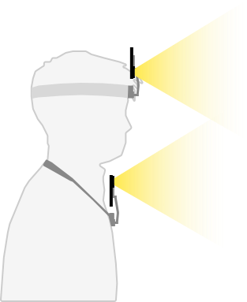
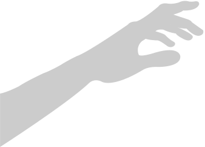

Wearing the egocentric device actively throughout the day, providing an "always-on" base log of physical reality.
Transforming continuous egocentric traces through 5 uniformly architected data layers (L1 through L3.5) into deep, interactive OpenClaw knowledge assets.
Using the agent organically for physical-world memory surfaces, while reviewing raw logs to explicitly craft loaded prompts and test contextual awareness.
Experiencing system-triggered interruptions during unrelated physical actions, evaluating unprompted judgment.

A rapid 5-minute interaction scoring session to capture interpretative judgments while memory is completely fresh.
A deep 15-minute alignment comparing the logged "system reality" against the nuanced "lived context".